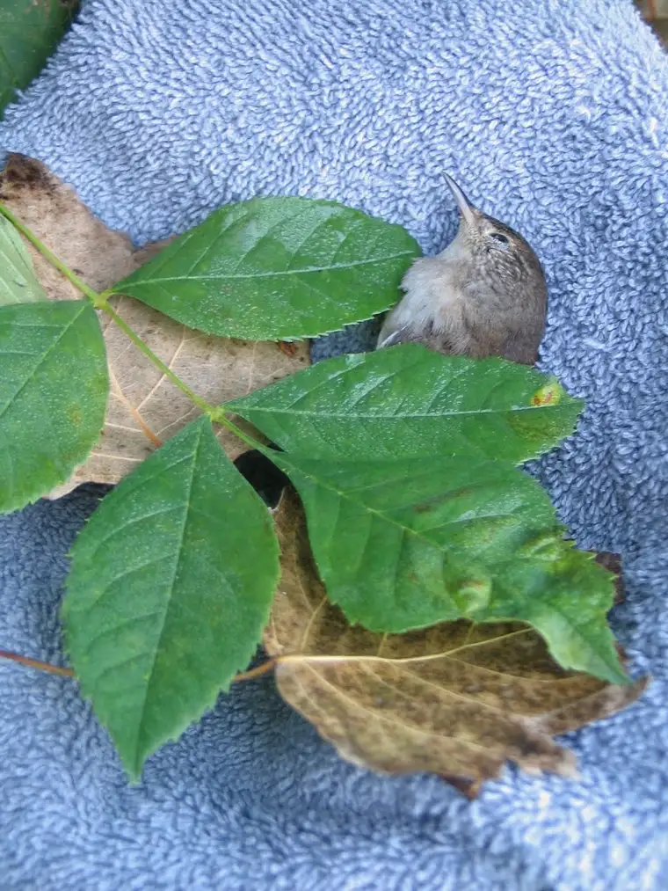

Welcome back to “7 Quick Takes Friday,” an occasional feature that offers a glimpse of where my thoughts have been lately.
{kind=link}
-1-
STARTING THE DAY 7-year-old style:
A recent peek into my 7-year-old’s backpack turned up a prayer that the class recites every morning. Sometimes, simple words say everything that is needed to be said.
My God, I give to You today
All that I think and do and say.
I’ll work and laugh, have fun and play
Jesus be with me all through this day.
Help me to shine like the sun.
Let me be good to everyone.
I believe in You.
I hope in You.
I love You.
Amen.
-2-
APPLE CRISP DAY: This morning, I helped out at school. Mostly, I took pictures while my 5-year-old and his classmates turned the handles of the apple presses…
{kind=link}
{kind=link}
-3-
Resulting in finely skinned apples…
{kind=link}
-4-
Which were later chopped and mixed with the rest of the ingredients…
{kind=link}
Then turned into a tasty dessert…
{kind=link}
-5-
SHARING HISTORY: A while after leaving the kindergarten room, I headed to my daughter’s fifth-grade class to give a presentation on my experiences growing up with and being connected to Native American peoples, in conjunction with what the class is studying. I shared some of my treasures with them, as well as some photos and videos from the powwow I attended with the same daughter in South Dakota this past summer.
{kind=link}
{kind=link}
-6-
R.I.P., LITTLE DUDE. A few nights back our cats got loose and somehow got hold of a fluffy little bird from the great outdoors. I was up late, working, and heard what sounded like a squeak toy. The cats, playing with something in the hallway, I thought. A few minutes later, they brought it into the room where I was working, offering their treasure to me. I thought it was a mouse at first, judging by the color, but soon realized in horror it was a small bird, now lame. I tried coaxing it from them, but one of the cats ran wildly around the house with it in its mouth, finally dropping it. By the time I was able to see it up close, its beak was moving open and shut as if it was gasping for air, no sound was coming forth; its legs appeared broken. I knew that it was dying. Frantic, I laid it in a container with a soft towel and put it outside. I knew it would die but at least it could have a dignified death, dying in nature under a tree and not in the mouth of the enemy! Sure enough, by morning its eyes had glazed over and its breathing had halted. My oldest daughter, who is very compassionate toward animals, helped prepare its final resting place. I thought this was so sweet of her. I don’t like seeing things die. And of course, the cats were only acting on instinct. But it was horrible to witness. My daughter’s act of finality was the only bright spot in the tragedy.
{kind=link}

-7-MISSING YOU ALREADY, PARK… Our family enjoyed a sub-sandwich picnic recently at one of our favorite parks. I sensed, while there, that it might have been our last visit before fall fades into early winter.
{kind=link}
All good things must come to an end, but the sun is always shining somewhere!
For more “quick takes,” visit Jennifer @ Conversion Diary!
Q4U: Where did the sun shine in your life this week?